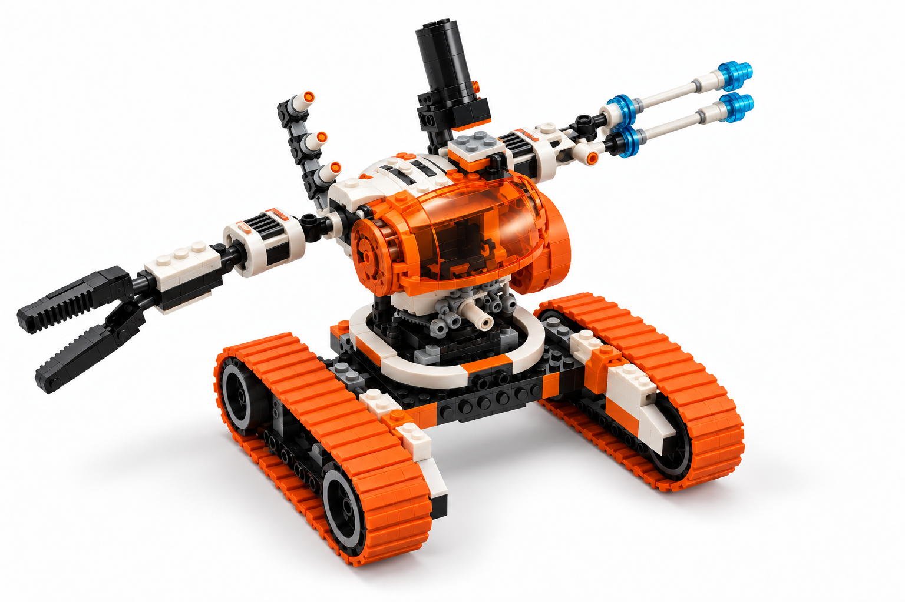

Astronauts · Mission Systems
MT-51 Claw-Tank
ДИЗАЙН ПРИЙНЯТО · 25.09.2026T084 — НЕ РОЗПОЧАТО
Production Design Target
Прийнятий ігровий цільовий вигляд
Чиста ігрова подача зберігає силует LEGO 7697 і прийняте розташування рук.Точні анімації та розміри перевіряються пізніше.
Видимі адаптації
- Чистий ракурс без сусіднього наборного апарата.
- Кольори Mars Mission відновлено за LEGO 7697.
- Клешня ліворуч, парний інструмент праворуч.
Затверджено директором
Силует, пропорції, біло-помаранчева ідентичність LEGO 7697 та пара асиметричних рук — клешня зліва, парний інструмент справа.
Конструкція та рух
- Низькі широкі парні гусениці несуть поворотний круглий корпус.
- Клешня й протилежний парний інструмент залишаються довгими та асиметричними.
- Корпус може повертатися незалежно від напрямку руху бази.
Джерела
{kind=link}
Сторінка 66 також показує інший апарат і вільні деталі; вони не належать до MT-51.
Рішення директора · 25.09.2026
Production Design Target прийнято. T084 авторизовано лише для MT-51, але моделювання не розпочато. Точний ритм багатоцільової атаки не затверджувався.
Що залишиться для наступних етапів
Точний ритм багатоцільової атаки, рух під час відступу, ігровий масштаб, LOD і читабельність з камери перевірятимуться у виробничих етапах. Посібник LEGO не задає ці параметри.
Технічні деталі
- Stable ID
- unit.astronauts.mt51_claw_tank
- Специфікація
- mt51_claw_tank_design_spec_20260925_v1.md
- Маніфест
- source_manifest_20260925_v1.json
- Зображення цілі
- mt51_claw_tank_target_20260925_v1.png · SHA-256 у маніфесті
- Статус
- Дизайн прийнятий 2026-09-25. T084 авторизовано лише для MT-51, моделювання не розпочато.